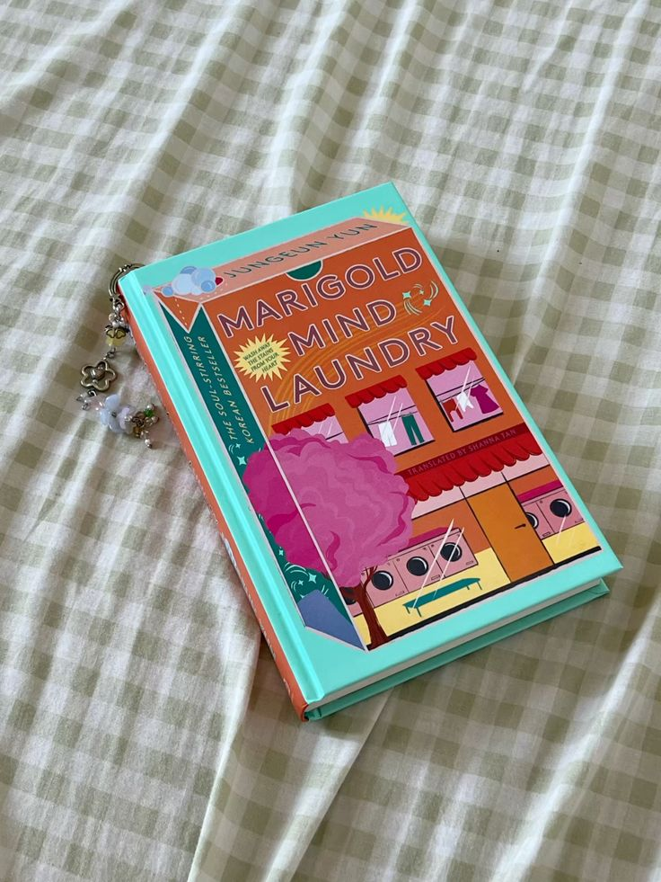
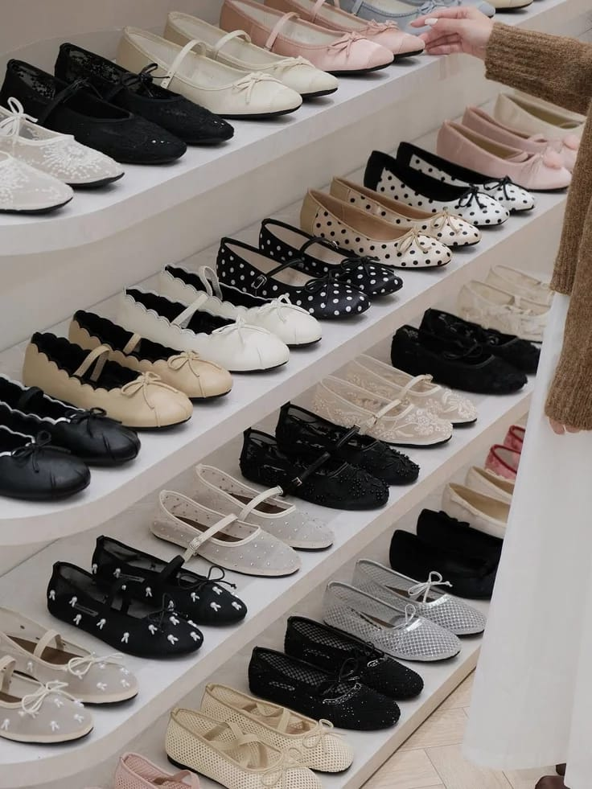
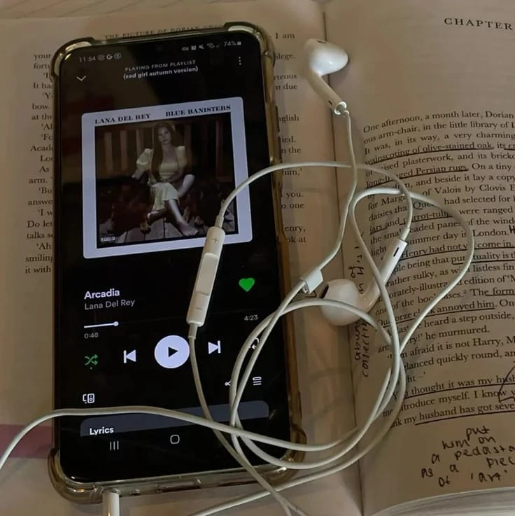
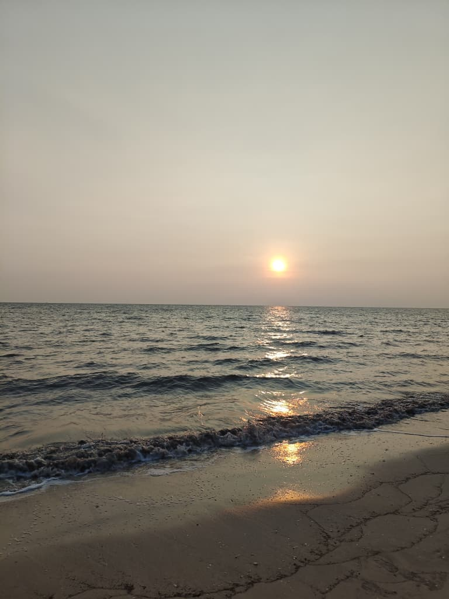
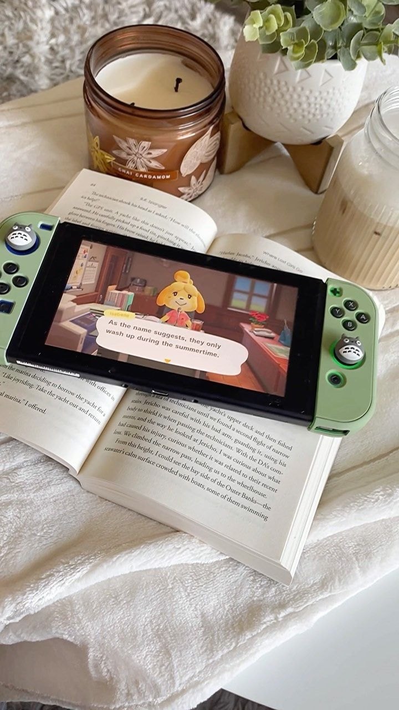

A corner dedicated to the things that fascinate me ☕︎

I genuinely enjoy reading books because they help me relax and release tension. Recently, I have become really interested in a genre called 'healing fiction.' These stories potrays moments of everyday life, personal growth and emotional restoration instead of cringe love story.

One of my personal interest is buying shoes that match my style and mood. For me, shoes are just as important as clothes because matching shoes with an outfit can make the overall look complete.

Listening to music is one of my favorite activities because it helps me relax. For me, the most important part of a song is the lyrics because meaningful lyrics can express emotions and tell stories.

Photography is one of my personal interests because I enjoy capturing beautiful moments. I especially enjoy taking pictures of scenery, nature, and simple aesthetic moments because they feel calming and meaningful (I took this photo myself) •ﻌ•.

Playing games is my go-to activity to escape from stress. I enjoy it because it helps me relax and take a break from my daily routine. Games also make me feel more refreshed and help me forget pressure for a while.